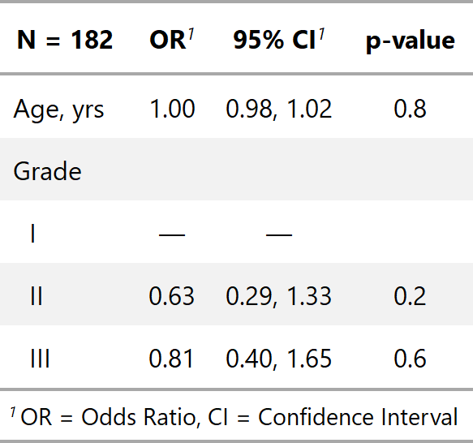
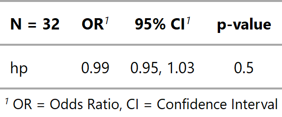

Display regression model results in table
tbl_regression.RdThis function uses broom::tidy and broom.mixed::tidy to perform the initial model formatting. Review the tbl_regression vignette for detailed examples.
tbl_regression(x, label = NULL, exponentiate = FALSE, include = NULL, exclude = NULL, show_yesno = NULL, conf.level = NULL, intercept = FALSE, estimate_fun = NULL, pvalue_fun = NULL)
Arguments
| x | Regression model object |
|---|---|
| label | List of formulas specifying variables labels,
e.g. |
| exponentiate | Logical indicating whether to exponentiate the
coefficient estimates. Default is |
| include | Names of variables to include in output. |
| exclude | Names of variables to exclude from output. |
| show_yesno | By default yes/no categorical variables are printed on a single row, when the 'No' category is the reference group. To print both levels in the output table, include the variable name in the show_yesno vector, e.g. `show_yesno = c("var1", "var2")`` |
| conf.level | Must be strictly greater than 0 and less than 1. Defaults to 0.95, which corresponds to a 95 percent confidence interval. |
| intercept | Logical argument indicating whether to include the intercept
in the output. Default is |
| estimate_fun | Function to round and format coefficient estimates. Default is style_sigfig when the coefficients are not transformed, and style_ratio when the coefficients have been exponentiated. |
| pvalue_fun | Function to round and format p-values.
Default is style_pvalue.
The function must have a numeric vector input (the numeric, exact p-value),
and return a string that is the rounded/formatted p-value (e.g.
|
Value
A tbl_regression object
Setting Defaults
If you prefer to consistently use a different function to format p-values or estimates, you can set options in the script or in the user- or project-level startup file, '.Rprofile'. The default confidence level can also be set.
Note
The N reported in the tbl_regression() output is the number of observations
in the data frame model.frame(x). Depending on the model input, this N
may represent different quantities. In most cases, it is the total number of
observations in your model; however, the precise definition of an observation,
or unit of analysis, may differ across models. Here are some common examples.
Survival regression models including time dependent covariates.
Random- or mixed-effects regression models with clustered data.
GEE regression models with clustered data.
This list is not exhaustive, and care should be taken for each number reported.
Example Output
Example 1

Example 2

Example 3

See also
See tbl_regression vignette for detailed examples
Other tbl_regression tools: add_global_p.tbl_regression,
add_nevent.tbl_regression,
bold_italicize_labels_levels,
bold_p.tbl_regression,
bold_p.tbl_stack,
inline_text.tbl_regression,
modify_header,
sort_p.tbl_regression,
tbl_merge, tbl_stack
Examples
library(survival) tbl_regression_ex1 <- coxph(Surv(ttdeath, death) ~ age + marker, trial) %>% tbl_regression(exponentiate = TRUE) tbl_regression_ex2 <- glm(response ~ age + grade, trial, family = binomial(link = "logit")) %>% tbl_regression(exponentiate = TRUE) library(lme4)#>#> #> #> #> #> #>tbl_regression_ex3 <- glmer(am ~ hp + (1 | gear), mtcars, family = binomial) %>% tbl_regression(exponentiate = TRUE)